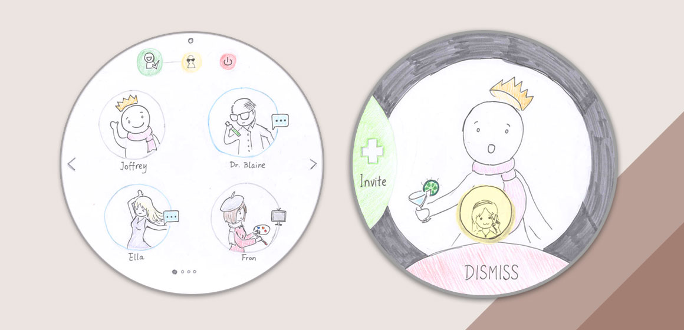

This project aims to teach us that good design is found in the project's core. The topic is anything related to home, which feels like an ocean without constrants. We need to narrow down first to find our core, then began to design our products. After interviewed our subjects and did secondary researches, we found that home is not a place where we live, home is where the heart is. So we decided to design a product that can help people connecting with their love ones easier.
We interviewed and researched about how people feel about home and found out that home is not a place where we live, home is where the heart is. So we decided to focus on human-connection and our design core is: Making it easy to connect with love ones.
Our target group is composed of young professionals just moving out on their own. They miss their friends from college, the casual atmosphere from dorms and Greek life, and sometimes they even miss home and their annoying siblings.
Photo taken by Craig Harkness
We wanted to connect users to their friends and loved ones with ease. We wanted to capture the feeling of having someone you care about pop their head into your doorway and ask how your day is going. We wanted to simulate enjoying a movie together with your girlfriend or boyfriend, or playing a game with your friends.
Our design solves this problem by connecting users in a new way. It allows them to just make themselves available, and any of their friends, family, or loved ones could “pop in” at any time. We’ve additionally created a feature to allow users to watch a movie or TV show simultaneously and enjoy the experience of hearing their loved ones laugh and be able to discuss it in real time.
We created our prototype with papers and Post-its to present each possible screens that would be used in our usability tests. After that, we tested our concept on 3 individuals, who was asked to conduct several tasks such as turning on the device, starting a video call with someone, inviting a person to join their current conversation, etc.
We collected feedbacks from our cohort, mentors and professor after our presentation and we iterated upon the privacy aspects of our design, as many issues were brought up during the critique. In our new design, when you start a conversation, you first decide whether it is a public or private chat. If you select to make it a private chat, the chat is closed, which prevents others from attempting to join your conversation.
We also created interactive prototype in our iteration phase.
Interviewed people about what they think is the most important part of home; Brainstormed with team; Sketched a lot to present and share my ideas; Created prototype for our usability test.